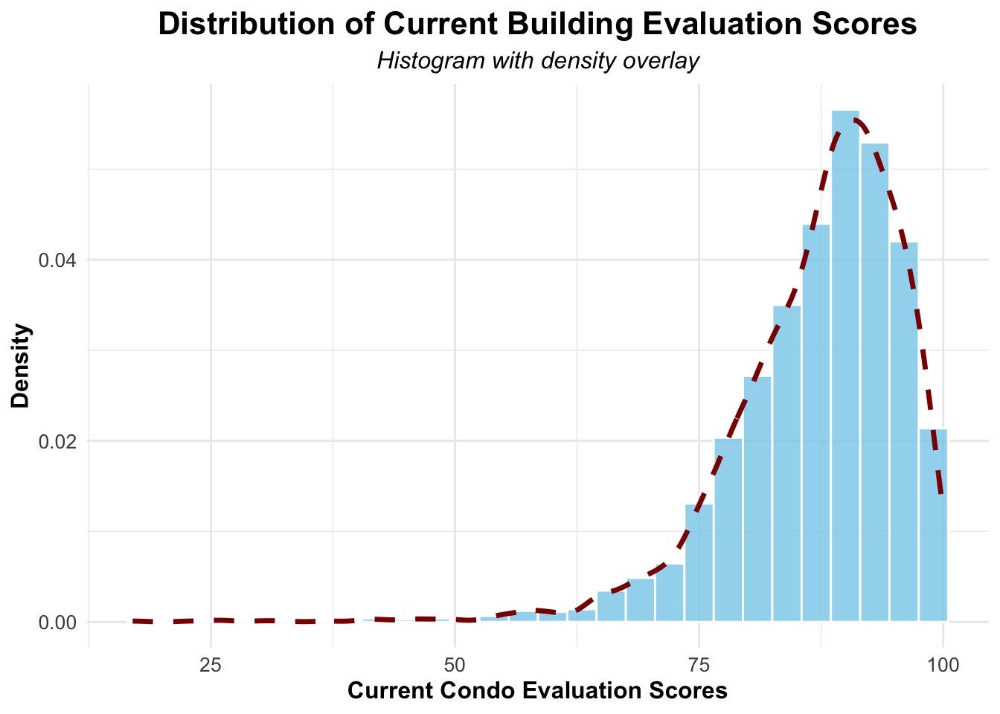
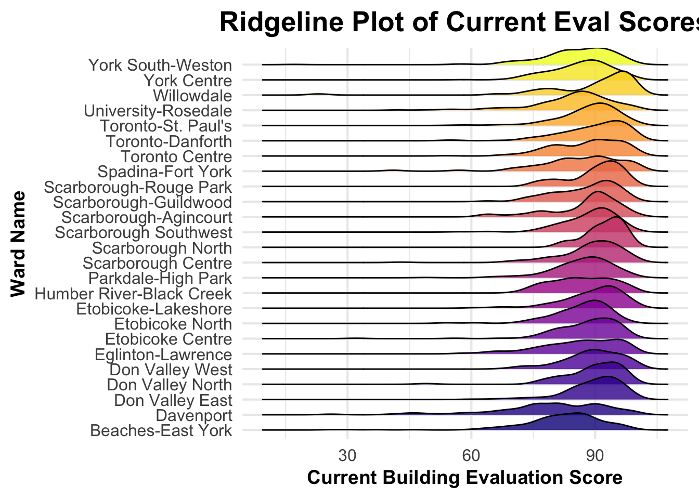
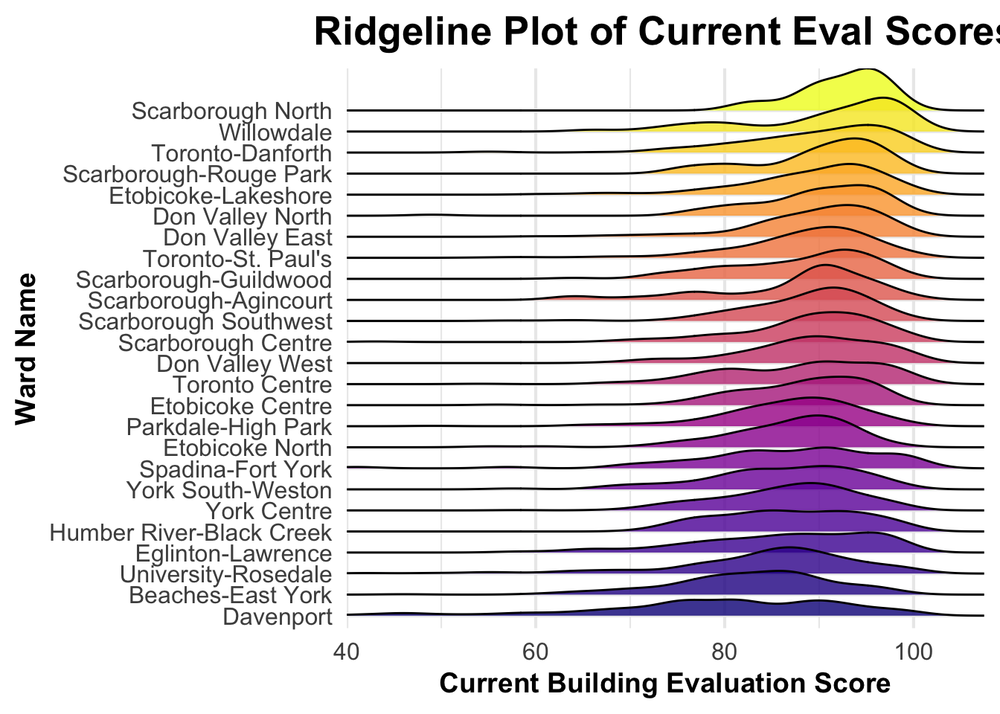
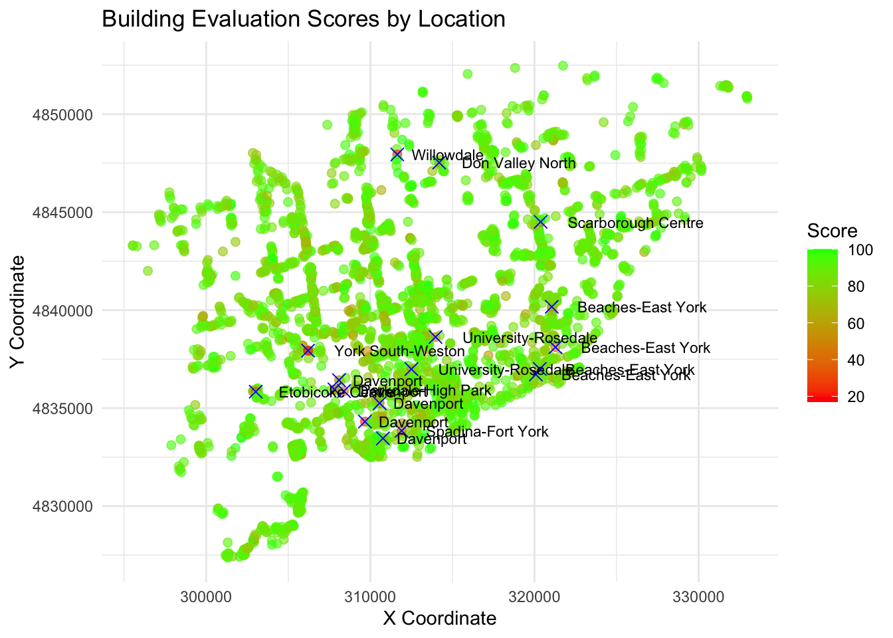
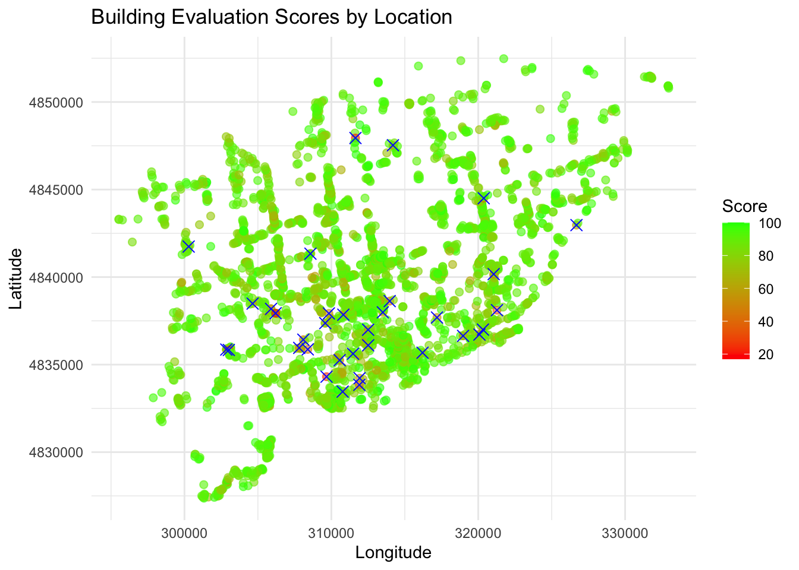
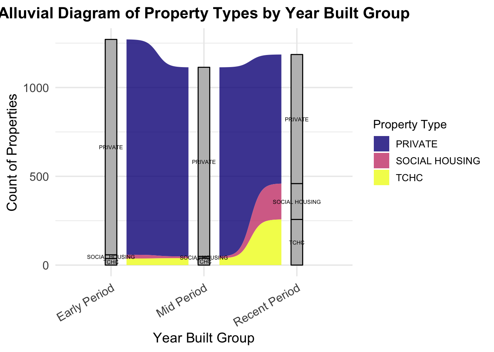
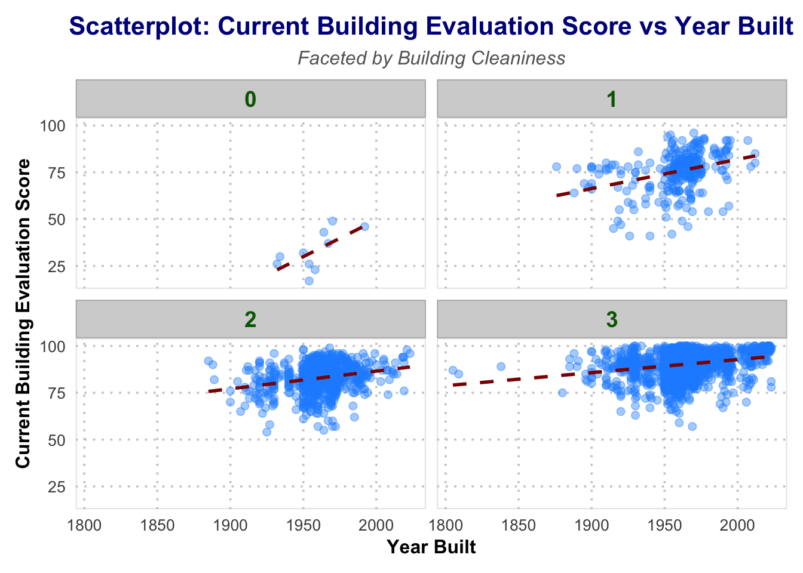
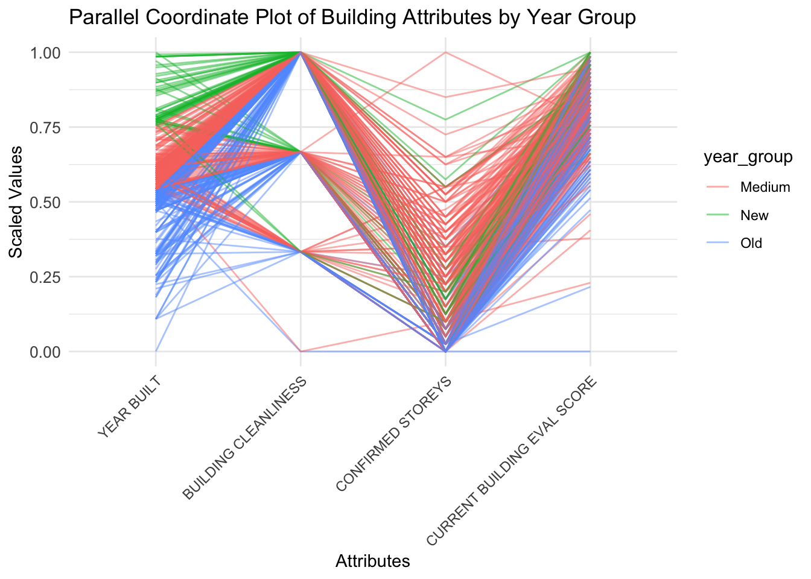

Code
suppressMessages(suppressWarnings({
library(ggplot2)
library(readr)
library(dplyr)
library(tidyr)
library(viridis)
library(vcd)
library(grid)
library(ggalluvial)
library(GGally)
library(ggridges)
}))
options(warn = -1)suppressMessages(suppressWarnings({
library(ggplot2)
library(readr)
library(dplyr)
library(tidyr)
library(viridis)
library(vcd)
library(grid)
library(ggalluvial)
library(GGally)
library(ggridges)
}))
options(warn = -1)suppressMessages(suppressWarnings({
building <- read_csv("/Users/ruobingzhang/Documents/==/columbia/sem1/stat5702EDA/EDAfinal2/Apartment Building Evaluations 2023 - current.csv")
# List of all columns containing "N/A"
columns_to_clean <- c(
"FENCING", "RETAINING WALLS", "CATCH BASINS / STORM DRAINAGE", "BALCONY GUARDS",
"EXT. RECEPTACLE STORAGE AREA", "CLOTHING DROP BOXES", "ACCESSORY BUILDINGS",
"INTERCOM", "LAUNDRY ROOM", "INT. RECEPTACLE STORAGE AREA", "MAIL RECEPTACLES",
"EXTERIOR DOORS", "STORAGE AREAS/LOCKERS MAINT.", "POOLS", "OTHER AMENITIES",
"PARKING AREAS", "GARBAGE/COMPACTOR ROOM", "ELEVATOR MAINTENANCE",
"ELEVATOR COSMETICS", "COMMON AREA VENTILATION", "CHUTE ROOMS - MAINTENANCE",
"EXTERIOR GROUNDS", "BUILDING EXTERIOR", "WINDOWS", "EXTERIOR WALKWAYS",
"LOBBY - WALLS AND CEILING", "LOBBY FLOORS", "INT. HALLWAY - WALLS / CEILING",
"INTERIOR HALLWAY FLOORS", "INT. LOBBY / HALLWAY LIGHTING",
"ELECTRICAL SERVICES / OUTLETS", "STAIRWELL - WALLS AND CEILING",
"STAIRWELL - LANDING AND STEPS", "STAIRWELL LIGHTING",
"INT. HANDRAIL / GUARD - SAFETY", "INT. HANDRAIL / GUARD - MAINT."
)
# Replace "N/A" with NA in the specified columns
building[columns_to_clean] <- lapply(building[columns_to_clean], function(column) {
column[column == "N/A"] <- NA
return(column)
})
for (column in columns_to_clean) {
missing_count <- sum(is.na(building[[column]]))
#if (missing_count > 100) {
# building[[column]] <- NULL
# } else {
# building[[column]][is.na(building[[column]])] <- median(building[[column]], na.rm = TRUE)
#}
#}
if (missing_count > 100) {
building[[column]] <- NULL
} else {
building[[column]][is.na(building[[column]])] <- 0
}
}
}))# For 'year_built' and 'year_registered', impute with median
building$`YEAR BUILT`[is.na(building$`YEAR BUILT`)] <- median(building$`YEAR BUILT`, na.rm = TRUE)
building$`YEAR REGISTERED`[is.na(building$`YEAR REGISTERED`)] <- median(building$`YEAR REGISTERED`, na.rm = TRUE)
# For 'x' and 'y', impute with mean
building$X[is.na(building$X)] <- mean(building$X, na.rm = TRUE)
building$Y[is.na(building$Y)] <- mean(building$Y, na.rm = TRUE)
# Exclude 'logitude' and 'latitude' columns
building <- building[, !colnames(building) %in% c("logitude", "latitude")]
# Rename 'PROPRTTY TYPE' for future plot
building <- building |>
rename(PROPERTYTYPE = `PROPERTY TYPE`)Studying the relationship between housing quality and regional differences is crucial for both prospective residents and investors in Toronto. To represent housing quality, we utilized the Current Building Evaluation Scores from our dataset. By visualizing these scores with a density plot, we can observe their distribution across the city.
ggplot(building, aes(x = `CURRENT BUILDING EVAL SCORE`)) +
geom_histogram(
aes(y = after_stat(density)),
binwidth = 3,
fill = "skyblue",
color = "white",
alpha = 0.8
) +
geom_density(
color = "darkred",
linewidth = 1.2,
linetype = "dashed"
) +
labs(
title = "Distribution of Current Building Evaluation Scores",
subtitle = "Histogram with density overlay",
x = "Current Condo Evaluation Scores",
y = "Density"
) +
theme_minimal() +
theme(
plot.title = element_text(size = 16, face = "bold", hjust = 0.5),
plot.subtitle = element_text(size = 12, face = "italic", hjust = 0.5),
axis.text = element_text(size = 10),
axis.title = element_text(size = 12, face = "bold")
)
From this histogram, we observed that the distribution appears to be left-skewed, with the majority of condo evaluation scores concentrated on the higher end (around 75–100). This indicates that most buildings in Toronto have relatively high evaluation scores, with fewer buildings falling in the lower quality range. To further investigate the evaluation scores in specific regions, we divided the city using Toronto’s 25-ward system and visualized the distribution of different property types within each ward using a Cleveland dot plot.
cleveland_data <- building |>
filter(!is.na(`CURRENT BUILDING EVAL SCORE`), !is.na(WARDNAME), !is.na(PROPERTYTYPE))
ward_scores <- cleveland_data |>
group_by(WARDNAME, PROPERTYTYPE) |>
summarise(AverageScore = mean(`CURRENT BUILDING EVAL SCORE`, na.rm = TRUE), .groups = "drop") |>
arrange(AverageScore)
ggplot(ward_scores, aes(x = AverageScore, y = reorder(WARDNAME, AverageScore), color = PROPERTYTYPE)) +
geom_point(linewidth = 3, alpha = 0.6) +
geom_segment(aes(x = min(AverageScore), xend = AverageScore,
y = reorder(WARDNAME, AverageScore),
yend = reorder(WARDNAME, AverageScore)),
color = "grey70", size = 0.5) +
labs(
title = "Cleveland Dot Plot of Evaluation Scores",
subtitle = "Comparison of average scores across wards, colored by property type",
x = "Average Current Building Evaluation Score",
y = "Ward Name",
color = "Property Type"
) +
theme_minimal(base_size = 14) +
theme(
plot.title = element_text(hjust = 0.5, face = "bold", size = 18, color = "#333333"),
plot.subtitle = element_text(hjust = 0.5, size = 14, color = "#666666"),
axis.text.x = element_text(size = 12, color = "#333333"),
axis.text.y = element_text(size = 12, color = "#333333"),
axis.title.x = element_text(size = 14, face = "bold", color = "#333333"),
axis.title.y = element_text(size = 14, face = "bold", color = "#333333"),
panel.grid.major.x = element_line(color = "grey90"),
panel.grid.minor.x = element_blank(),
panel.grid.major.y = element_blank()
) +
scale_color_viridis_d() 
Based on this Cleveland dot plot, Social Housing and TCHC properties exhibit significant variance in evaluation scores, while Private Housing tends to have more consistent scores, generally concentrated in the higher range. Notably, Social Housing in the Scarborough and Etobicoke Centre wards stands out with exceptionally high scores, exceeding 95, which could be attributed to recent investments in renovation and maintenance or newer construction in these areas. On the other hand, wards like Davenport, Beaches-East York, and Humber River-Black Creek have the lowest overall evaluation scores. This may reflect aging infrastructure, limited funding for maintenance, or a higher concentration of older properties, particularly in social housing categories.
filtered_data <- building |>
filter(!is.na(WARDNAME) & !is.na(`CURRENT BUILDING EVAL SCORE`))
filtered_data <- filtered_data %>%
group_by(WARDNAME) %>%
mutate(MedianScore = median(`CURRENT BUILDING EVAL SCORE`, na.rm = TRUE)) %>%
ungroup() %>%
mutate(WARDNAME = reorder(WARDNAME, MedianScore))
suppressMessages({
ggplot(data = filtered_data, aes(
x = `CURRENT BUILDING EVAL SCORE`,
y = WARDNAME,
fill = WARDNAME
)) +
geom_density_ridges(scale = 2, alpha = 0.8) +
scale_fill_viridis_d(option = "plasma") +
scale_x_continuous(
limits = c(40, NA),
expand = c(0, 0)
) +
labs(
title = "Ridgeline Plot of Current Eval Scores",
x = "Current Building Evaluation Score",
y = "Ward Name",
fill = "Ward"
) +
theme_minimal(base_size = 16) +
theme(
plot.title = element_text(hjust = 0.5, size = 20, face = "bold"),
axis.text.x = element_text(size = 12, angle = 0),
axis.text.y = element_text(size = 12),
axis.title.x = element_text(size = 14, face = "bold"),
axis.title.y = element_text(size = 14, face = "bold"),
legend.position = "none"
)
})Picking joint bandwidth of 2.49
This ridgeline plot shows a different ranking of evaluation scores based on ward than the previous Cleveland dot plot, as the former one used raw scores whereas the latter one used mean scores. Some wards show a wider spread of scores (e.g., Scarborough Guildwood, Davenport), suggesting greater variability in housing quality within those areas. Wards like Willowdale and Scarborough North appear to have relatively higher median evaluation scores, as seen by the placement of their peaks.
median_val <- median(building$`CURRENT BUILDING EVAL SCORE`, na.rm = TRUE)
iqr_val <- IQR(building$`CURRENT BUILDING EVAL SCORE`, na.rm = TRUE)
building$robust_scaled_score <- (building$`CURRENT BUILDING EVAL SCORE` - median_val) / iqr_val
building$robust_scaled_score <- (building$`CURRENT BUILDING EVAL SCORE` - median_val) / iqr_val# Define a threshold for low scores (e.g., below the first quartile)
low_threshold <- quantile(building$`CURRENT BUILDING EVAL SCORE`, 0.005, na.rm = TRUE)
# Add a new column to classify points
building$score_category <- ifelse(building$`CURRENT BUILDING EVAL SCORE` < low_threshold, "Low", "Others")
# Plot with highlighted low scores and region labels
ggplot(building, aes(x = X, y = Y)) +
# General points
geom_point(aes(color = `CURRENT BUILDING EVAL SCORE`), size = 2, alpha = 0.6) +
# Highlight low scores
geom_point(data = subset(building, score_category == "Low"),
aes(x = X, y = Y), color = "blue", size = 3, shape = 4) +
# Add region labels for low scores
geom_text(data = subset(building, score_category == "Low"),
aes(x = X, y = Y, label = WARDNAME), # Replace 'WARDNAME' with the actual column name for region
size = 3, hjust = -0.2, color = "black") +
# Color gradient for scores
scale_color_gradient(low = "red", high = "green") +
# Labels and themes
labs(
title = "Building Evaluation Scores by Location",
x = "X Coordinate",
y = "Y Coordinate",
color = "Score"
) +
theme_minimal()
The plot reveals that low-scoring apartments, marked with blue crosses, are often located near the city center or in historically older neighborhoods, such as Parkdale-High Park and Spadina-Fort York. In contrast, high-scoring apartments, represented by green dots, cluster in areas like Scarborough Centre and Don Valley North, which likely benefit from newer constructions, better maintenance, and stronger urban planning. These observations highlight significant regional disparities in building quality, potentially influenced by factors like economic conditions and property types. Next, we will explore the relationship between scores and building ageto understand whether older buildings tend to have lower evaluations.
As Toronto continues to grow, shifts in property types—such as the rise of private apartments, the development of social housing, and changes in TCHC properties—offer insights into urban planning, population demands, and socioeconomic trends. This part will examine historical and recent data on property types, analyzing their distribution across different time periods. By visualizing these trends, we aim to uncover patterns that could inform future housing policies and urban development strategies.
ggplot(building, aes(x = `YEAR BUILT`, y = `CURRENT BUILDING EVAL SCORE`)) +
stat_bin2d(
bins = 50,
aes(fill = ..count..)
) +
scale_fill_gradientn(
colors = viridis::turbo(10),
name = "Building Count"
) +
labs(
title = "Building Evaluation Scores by Year Built",
subtitle = "Density of Buildings Evaluated Across Different Years",
x = "Year Built",
y = "Building Evaluation Score"
) +
theme_minimal(base_size = 16) +
theme(
plot.title = element_text(
size = 22, face = "bold", hjust = 0.5, color = "#333333"
),
plot.subtitle = element_text(
size = 16, hjust = 0.5, color = "#555555"
),
axis.title.x = element_text(size = 14, face = "bold"),
axis.title.y = element_text(size = 14, face = "bold"),
axis.text = element_text(size = 12, color = "#333333"),
legend.title = element_text(size = 12, face = "bold"),
legend.text = element_text(size = 10),
panel.grid.major = element_line(color = "gray85", linewidth = 0.5),
panel.grid.minor = element_blank()
)
The heatmap shows that most buildings are built a bit after 1950 as the red center is positioned at around 1960. Overall, the majority of buildings were constructed between 1950 and 2000, whereas buildings constructed before 1900 are sparse. There are still a few buildings plotted after 2000, possibly because of limited data availability or fewer constructions. In terms of evaluation scores, buildings constructed between 1950 and 2000 generally show a higher density of scores clustering around the 75-100 range, indicating better overall quality or maintenance. Conversely, buildings constructed before 1900 tend to have more dispersed and lower scores, reflecting potential issues with aging infrastructure and upkeep. Buildings built after 2000 exhibit high evaluation scores, although their count is relatively low.
building$YearGroup <- cut(
building$`YEAR BUILT`,
breaks = quantile(building$`YEAR BUILT`, probs = c(0, 1/3, 2/3, 1), na.rm = TRUE),
labels = c("Early Period", "Mid Period", "Recent Period"),
include.lowest = TRUE
)
allu_data <- building |>
group_by(YearGroup, PROPERTYTYPE) |>
summarise(Count = n(), .groups = "drop") |>
ungroup()
ggplot(data = allu_data,
aes(x = YearGroup, stratum = PROPERTYTYPE, alluvium = PROPERTYTYPE, y = Count)) +
geom_flow(aes(fill = PROPERTYTYPE), curve_type = "sigmoid", alpha = 0.8) +
geom_stratum(width = 1/8, fill = "grey", color = "black") +
geom_text(stat = "stratum", aes(label = after_stat(stratum)),
size = 2, color = "black", vjust = 0.5) +
scale_fill_viridis_d(option = "plasma", name = "Property Type") +
labs(
x = "Year Built Group",
y = "Count of Properties",
title = "Alluvial Diagram of Property Types by Year Built Group"
) +
theme_minimal(base_size = 14) +
theme(
plot.title = element_text(hjust = 0.5, size = 16, face = "bold"),
axis.text.x = element_text(size = 12, angle = 30, hjust = 1),
axis.text.y = element_text(size = 12),
axis.title = element_text(size = 14),
legend.position = "right",
legend.title = element_text(size = 12),
legend.text = element_text(size = 10)
)
The alluvial diagram splits the year built into three equal groups, we can observe that across all periods, private properties are the most prevalent property type. But as recent period approaches, the proportions of social housing and TCHC (Toronto Community Housing Corporation) have increased a lot, despite that private housing still dominates.
building <- building |>
mutate(
old_or_new = ifelse(`YEAR BUILT` > 1960, "new", "old"),
high_or_low = ifelse(
`CURRENT BUILDING EVAL SCORE` >= mean(`CURRENT BUILDING EVAL SCORE`, na.rm = TRUE),
"high", "low"
)
)
mosaic(
~ high_or_low + old_or_new + PROPERTYTYPE,
data = building,
highlighting = "PROPERTYTYPE",
highlighting_fill = c("#ADD8E6", "#4682B4", "#00008B"),
direction = c("v", "v", "h"),
main = "Mosaic Plot of Building Characteristics",
sub = "Split by Evaluation Score, Year Built, and Property Type",
labeling_args = list(
gp_labels = gpar(fontsize = c(10, 8, 6), fontface = "bold"),
gp_varnames = gpar(fontsize = 10, fontface = "bold", col = "darkblue"),
rot_labels = c(0, 0, 45),
just_labels = c("center", "center", "center")
),
keep_aspect_ratio = FALSE,
margins = unit(c(2, 2, 2, 4), "lines")
)The mosaic plot further complements the findings from the heatmap and alluvial diagram, revealing that private buildings are the dominant property type across all time periods. However, their proportion has decreased over time, as new buildings have seen a relatively higher representation of non-private property types such as social housing and TCHC. This shift suggests a gradual diversification of property types in Toronto’s housing landscape.
In terms of evaluation scores, the mosaic plot highlights an interesting pattern: older buildings tend to have both high and low evaluation scores, indicating greater variability in their condition. This aligns with the heatmap, which shows a more dispersed distribution of scores for older buildings, likely due to aging infrastructure and inconsistent maintenance practices. In contrast, newer buildings exhibit a tighter range of scores, with a notable concentration in the higher evaluation categories, as seen in the heatmap’s red and green clusters around the 75–100 range.
Evaluation scores are shaped by a variety of elements, including building age, property type, maintenance levels, and regional characteristics. By analyzing these factors, we can uncover patterns and relationships that reveal why certain buildings achieve higher scores while others lag behind. This part will use data on building attributes, such as cleaniess, repair plans, and maintainance, to explore how these variables contribute to evaluation outcomes.
ggplot(building, aes(x = `YEAR BUILT`, y = `CURRENT BUILDING EVAL SCORE`)) +
geom_point(color = "dodgerblue", alpha = 0.4, size = 2) +
geom_smooth(method = "lm", color = "darkred", linetype = "dashed", se = FALSE, size = 1) +
facet_wrap(~ `BUILDING CLEANLINESS`, ncol = 2) +
labs(
title = "Scatterplot: Current Building Evaluation Score vs Year Built",
subtitle = "Faceted by Building Cleaniness",
x = "Year Built",
y = "Current Building Evaluation Score"
) +
theme_minimal(base_size = 14) +
theme(
plot.title = element_text(size = 16, face = "bold", hjust = 0.5, color = "darkblue"),
plot.subtitle = element_text(size = 12, face = "italic", hjust = 0.5, color = "gray40"),
strip.text = element_text(size = 14, face = "bold", color = "darkgreen"),
axis.title = element_text(size = 12, face = "bold"),
axis.text = element_text(size = 10),
panel.grid.major = element_line(color = "gray80", linetype = "dotted"),
panel.grid.minor = element_blank(),
panel.background = element_rect(fill = "white", color = "gray90"),
strip.background = element_rect(fill = "lightgray", color = "gray70"),
plot.margin = margin(t = 10, r = 10, b = 10, l = 10)
)`geom_smooth()` using formula = 'y ~ x'
Across all facets, there seems to be a positive trend where newer buildings generally have higher evaluation scores. Higher cleanliness levels (2 and 3) are associated with higher evaluation scores, regardless of building age, whereas poor cleanliness (level 0) is more common in older buildings, highlighting a potential focus area for improvement in housing quality.
data_for_plot <- building[, c("YEAR BUILT", "BUILDING CLEANLINESS", "CONFIRMED STOREYS", "CURRENT BUILDING EVAL SCORE")]
set.seed(123)
data_sampled <- data_for_plot[sample(1:nrow(data_for_plot), size = 500), ]
data_sampled <- na.omit(data_sampled)
data_sampled <- data_sampled %>%
mutate(
year_group = case_when(
`YEAR BUILT` < 1960 ~ "Old",
`YEAR BUILT` >= 1960 & `YEAR BUILT` < 1990 ~ "Medium",
`YEAR BUILT` >= 190 ~ "New"
)
)
ggparcoord(
data = data_sampled,
columns = 1:4,
groupColumn = "year_group",
scale = "uniminmax",
alphaLines = 0.5
) +
labs(
title = "Parallel Coordinate Plot of Building Attributes by Year Group",
x = "Attributes",
y = "Scaled Values"
) +
theme_minimal() +
theme(
axis.text.x = element_text(angle = 45, hjust = 1),
axis.text.y = element_text(size = 10)
)
The alluvial graph reveals that newer buildings tend to receive higher evaluation scores due to better cleanliness standards and more modern infrastructure. In contrast, older buildings generally have lower scores, often attributed to outdated structures and less favorable maintenance conditions. Medium-aged buildings display more variability in certain attributes, such as the number of storeys, which might influence their evaluation scores. These findings highlight the importance of maintenance and modernization in improving building evaluations across different age groups.
ggplot(building, aes(x = `STAIRWELL LIGHTING`, y = `CURRENT BUILDING EVAL SCORE`)) +
geom_jitter(aes(color = `BUILDING CLEANLINESS`), alpha = 0.6, size = 2) +
labs(
title = "Impact of Stairwell Lighting and Cleanliness on Evaluation Score",
x = "Stairwell Lighting Score",
y = "Building Evaluation Score",
color = "Building Cleanliness"
) +
theme_minimal()
The scatterplot reveals the combined impact of stairwell lighting and building cleanliness on evaluation scores. Higher stairwell lighting scores (2 and 3) are generally associated with higher building evaluation scores, clustering around the 75–100 range. This trend is further emphasized by the color gradient representing building cleanliness: buildings with higher cleanliness levels (darker blue) tend to achieve higher evaluation scores, even when stairwell lighting scores are moderate. Conversely, buildings with lower cleanliness levels (lighter blue) are more widely dispersed and more likely to have lower evaluation scores, regardless of their stairwell lighting scores. This suggests that while both factors are important, building cleanliness plays a critical role in achieving higher evaluation scores.
Overall, housing quality, measured through evaluation scores, shows that most buildings perform well, with scores concentrated between 80 and 100. However, some regions display clusters of lower-quality housing, particularly in social housing and TCHC properties, which tend to score lower than private properties. Regional variability is evident, with certain wards (e.g. Willowdale, Toronto-Danforth, etc.) consistently scoring higher than others, reflecting disparities in housing conditions across the city.
Over time, private housing has remained the dominant property type, but newer developments show a growing presence of social housing and TCHC properties, highlighting shifts in urban development priorities. Housing quality is influenced by factors like the year built and building cleanliness, with modern buildings and well-maintained properties scoring higher. These findings emphasize the importance of maintenance and infrastructure improvements in enhancing housing quality and provide valuable guidance for policymakers to address regional disparities and prioritize upgrades in lower-performing areas.
Analysis also shows that factors such as the year of construction, building cleanliness, and stairwell lighting influence evaluation scores. Modern, well-maintained, and better-lit buildings tend to score higher.